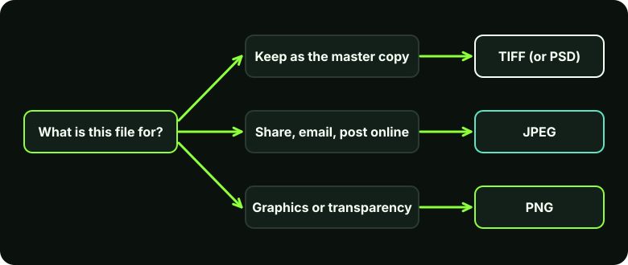

Why the format matters
When you save a photo you choose how its information is stored. Some formats shrink the file by throwing away detail you may not notice. Others keep everything but are larger. Choosing well means your photos stay sharp, open everywhere and do not fill your storage. Choosing badly can cost quality that you cannot get back.
Two terms explain most of the differences:
- Lossy compression makes the file smaller by permanently discarding some detail. JPEG is the common example.
- Lossless compression makes the file smaller without discarding anything, so the image can be restored exactly. PNG and (optionally) TIFF work this way.
The main formats compared
| Format | Compression | Transparency | Best for |
|---|---|---|---|
| JPEG (.jpg) | Lossy | No | Photos for sharing, email and the web |
| PNG (.png) | Lossless | Yes | Graphics, screenshots, logos, anything needing transparency |
| TIFF (.tif) | Lossless (or none); lossy options exist | Yes, with layers or an alpha channel | Archival scans and high-quality masters |
| PSD (.psd) | Lossless | Yes | Photoshop working files with layers |
JPEG: small and convenient, with a cost
JPEG is the format almost every camera, phone and website uses. It is excellent for photographs because it can shrink a file a lot while still looking good. The cost is that each time you edit and re-save a JPEG, it is compressed again, and a little more detail is lost. Do this many times and you see blocky patches and smeared edges.
JPEG does not support transparency and is poor for sharp text, line art and screenshots.
PNG: lossless, with transparency
PNG keeps every pixel exactly and supports transparent backgrounds, which makes it ideal for logos, interface graphics and screenshots. For a detailed photograph, a PNG is usually much larger than the equivalent JPEG, so it is not the best default for sharing photos.
TIFF and PSD: for masters and archives
TIFF is a flexible, widely supported format that can store high-quality images without lossy compression. Libraries and archives use it for preservation; the Library of Congress lists TIFF among its preferred formats for still images, as noted in the sources below. PSD is Photoshop's own format and is the right place to keep layers (see the layers and masks guide) while you are still editing.
Both files are large. That is the trade-off for keeping everything.
How to choose

- Keep a master. Store your best version as TIFF or, if you have layers, PSD. Never overwrite the original scan or camera file.
- Export copies for sharing. Make a JPEG from the master for email, social media or the web.
- Use PNG for graphics. If it has text, sharp edges or a transparent background, choose PNG.
- Edit the master, not the JPEG. If you need changes later, go back to the master and export a fresh copy.
Step by step: export a JPEG in Photoshop
In Photoshop
Choose File > Export > Export As. Menu names can differ slightly between versions.
- Pick the format. In the Export As dialog, set Format to JPG (or PNG).
- Set quality. For JPG, a quality of roughly 80 to 90 per cent is a common balance for photos. Watch the preview and file size, and raise the quality if you see blocky areas.
- Check size. Set the pixel dimensions you need (see the resolution guide). Leave the original untouched.
- Colour space. Tick Convert to sRGB for images going on the web, since sRGB is what most screens and browsers expect.
- Export and give the file a new name so you do not overwrite your master.
To save a TIFF or PSD master, use File > Save As and choose the format from the list.
Common mistakes
- Re-saving the same JPEG repeatedly. Each save compresses again. Edit the master, then export once.
- Saving a logo as JPEG. You get fuzzy edges and a white box. Use PNG.
- Choosing PNG for every photo. Files become needlessly large, which slows websites.
- Deleting the only master. Once only the JPEG remains, lost detail cannot be recovered.
- Assuming a bigger file is better quality. Format and pixel size matter more than megabytes.
Limits to be aware of
This guide covers the common formats. Newer ones such as WebP, AVIF and HEIC exist and are efficient, but support differs between apps and devices, so JPEG and PNG remain the safest choices for sharing.
Key takeaways
- JPEG is lossy and small; PNG is lossless with transparency; TIFF and PSD are for masters.
- Always keep a master and export copies from it.
- Do not re-save a JPEG again and again.
- Use PNG for graphics and transparency, JPEG for photos.
Related: scanning old photographs, where the TIFF master advice matters most.